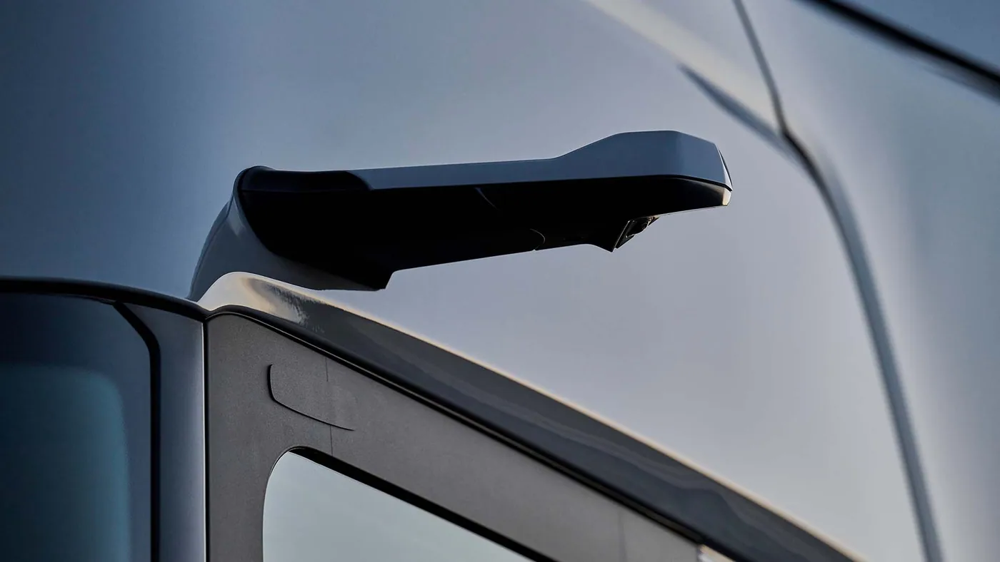

Scania presentó el 14 de septiembre de 2026 la actualización Dynamic para sus series R y S. La propuesta combina cambios exteriores e interiores para vehículos con distintas motorizaciones, con el conductor y la eficiencia energética como ejes.
La marca declara una reducción de consumo energético de alrededor del 2%, dependiente de la configuración y del uso. Entre las novedades enumera cámaras retrovisoras, modificaciones aerodinámicas, asientos e iluminación renovados y nuevas funciones de asistencia. El sistema de cámaras utiliza dos pantallas Full HD y diferentes modos de visualización.
La comunicación corresponde a la presentación internacional. No confirma una fecha de llegada de estas versiones a Argentina ni permite asignar el mismo equipamiento a cualquier Scania R o S que ya esté trabajando en el país.
La cabina se evalúa durante toda la jornada
Análisis de Zabala Repuestos. Cuando se presenta un camión, la mirada suele detenerse primero en el frente. Para quien lo utiliza, también importa lo que sucede después de subir: encontrar los controles, acomodar sus pertenencias y preparar el puesto para el recorrido. Una renovación merece evaluarse en esa secuencia completa.
Una forma útil de revisar el interior es reconstruir tareas habituales. Guardar documentación, consultar información con el vehículo detenido o preparar el espacio de descanso ayuda a identificar detalles que una fotografía no explica. La comodidad no debería reducirse a una lista de accesorios.
Una cifra de ahorro necesita contexto
Para una empresa, conviene separar la mejora declarada por el fabricante del resultado que observará en su propia operación. El punto de partida es conocer qué versión se compara y bajo qué condiciones. Sin esos datos, una cifra puede parecer más general de lo que realmente es.
En una eventual prueba local, sería útil acordar recorridos y una forma constante de registrar la actividad. También deberían anotarse cambios de carga, demoras y otras circunstancias relevantes. Así, el resultado puede discutirse con antecedentes y no únicamente mediante una impresión favorable del primer viaje.

Aprender una interfaz también forma parte de la entrega
La incorporación de pantallas y modos de visualización abre preguntas de capacitación. Antes de utilizar una configuración nueva, el conductor debería recibir una explicación de sus funciones y límites conforme a las indicaciones oficiales. No es razonable dejar todo ese aprendizaje para el primer servicio.
La flota puede organizar una instancia de familiarización y recoger observaciones concretas. Qué información se entiende de inmediato, qué genera dudas y a quién consultar son preguntas valiosas. Las ayudas de conducción acompañan el trabajo, pero no sustituyen la responsabilidad de quien maneja.
La posventa necesita identificar la versión exacta
Un cambio de diseño puede incluir componentes que se parecen a los anteriores sin ser equivalentes. Para consultar una pieza, el chasis y la referencia correspondiente siguen siendo más útiles que el nombre comercial del modelo. La fotografía sirve como complemento, no como única confirmación.
También conviene conservar los antecedentes de reparaciones y equipamiento instalado. Esa información permite que el taller relacione una consulta con la configuración real. En sistemas que combinan elementos físicos y electrónicos, saber qué está montado es parte esencial del diagnóstico.
Qué preguntar antes de trasladar la novedad a una flota argentina
- Qué versiones están confirmadas para el mercado local.
- Qué elementos son de serie y cuáles dependen de una opción.
- Qué formación acompaña la entrega y quién atiende las consultas.
- Qué documentación y respaldo reciben los talleres de la red.
- Cómo se verificará el desempeño en el trabajo habitual de la empresa.
La presentación permite seguir la evolución del camión de larga distancia sin confundir novedad internacional con disponibilidad inmediata. Su interés está en conectar diseño, uso y atención: una mejora se vuelve realmente útil cuando el conductor puede aprovecharla y la flota puede sostenerla durante años.